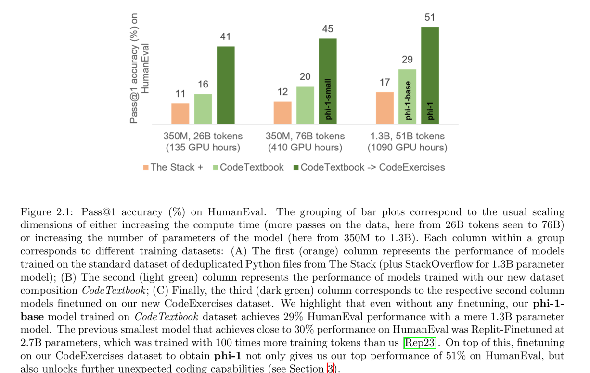
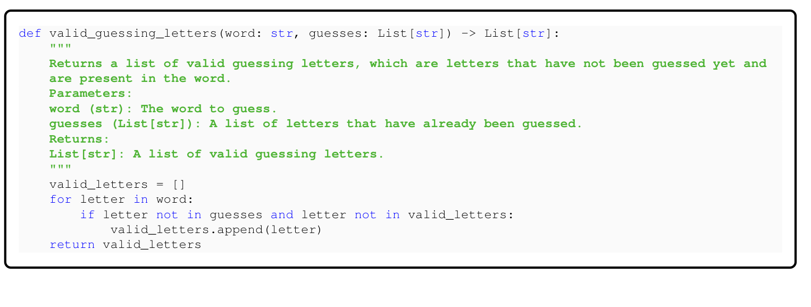

Textbooks Are All You Need¶
- Summary : This paper proposes a new code assisting model that uses Python text books to train as textbooks have more curated knowledge. There are quite a few limitations such as not learning, maths and being specific to the type of textbooks used.
Abstract¶
- phi-1
- new large language model for code,
- significantly smaller size than competing models:
- Transformer-based model with 1.3B parameters, trained for 4 days on 8 A100s, using a selection of "textbook quality" data from the web (6B tokens)
- synthetically generated textbooks and exercises with GPT-3.5
- surprising emergent properties compared to phi-1-base, our model before our finetuning stage on a dataset of coding exercises, and phi-1-small, a smaller model with 350M parameters trained with the same pipeline as phi-1 that still achieves 45% on HumanEval.

Training Details and the Importance of High-quality Data¶

-
the central ingredient our model relies on textbook-quality training data.¶
- training data. Unli+ke previous work that used standard sources of text data for code generation, such as The Stack [KLA 22] (which contains sourcecode from repositor+ies with permissive licenses) and other not optimal for teaching the model how to reason and plan algorithmically.
- The standard code datasets [KLA+22, LCC+22] form a large and diverse corpus covering broad range of topics and use cases.
- sufer from several drawbacks:
- samples are not self-contained, meaning that they depend on other modules or files that are external to the snippet, making them hard to understand without additional context.
- Typical examples do not involve any meaningful computation, but rather consist of trivial or boilerplate code, such as defining constants, setting parameters, or configuring GUI element
- Samples that do contain algorithmic logic are often buried inside complex or poorly documented functions, making them dicult to follow or learn from.
- examples are skewed towards certain topics or use cases, resulting in an unbalanced distribution of coding concepts and skills across the dataset.
- language models would benefit from a training set that has the same qualities as what a human would perceive as a good "textbook": it should be clear, self-contained, instructive, and balanced.
- three main datasets:
- filtered code-language dataset
- subset of The Stack and StackOverflow, obtained by using a language model-based classifier (consisting of about 6B tokens).
- synthetic textbook dataset
- <1B tokens of GPT-3.5 generated Python textbooks.
- small synthetic exercises dataset
- ∼180M tokens of Python exercises and solutions.
- s of Python exercises and solutions. contain less than 7B tokens
- CodeTextbook
Filtering of Existing Code Datasets Using a Transformer-based Classifier¶
- Python subset of the deduplicated version of The Stack and the StackOverflow, which together contain over 35 million files/samples, totalling over 35B tokens.
- annotate the quality of a small subset of these files (about 100k samples) using GPT- 4: given a code snippet, the model is prompted to "determine its educational value for a student whose goal is to learn basic coding concepts".
- use this annotated dataset to train a random forest classifier that predicts the quality of a file/sample using its output embedding from a pretrained codegen model as features.
- unlike GPT-3.5, which we use extensively to generate synthetic content (discussed below), we use GPT-4 minimally only for annotations on the quality of a small subset of The Stack and StackOverflow

Creation of Synthetic Textbook-quality Datasets¶
- main challenges in creating a high-quality dataset for code generation is ensuring that the examples are diverse and non-repetitive.
- the examples should cover a wide range of coding concepts, skills, and scenarios, and that they should vary in their level of diculty, complexity, and style.
- exposes the language model to diferent ways of expressing and solving problems in code, it reduces the risk of overfitting or memorizing specific patterns or solutions, and it increases the generalization and robustness of the model to unseen or novel tasks
- not trivial, especially when using synthetic data generated by another language model.
- Simply prompting the model to produce a coding textbook or a set of exercises, even with some variation in the instructions or the parameters, will likely result in a very homogeneous and redundant dataset, where the same concepts and solutions are repeated over and over with minor changes.
- language models tend to follow the most probable or common paths given their training data and their priors, and they lack the creativity or the incentive to explore alternative or novel ways of generating code.
- one needs to find the right "trick"
- The synthetic textbook dataset
- diversity is obtained by providing constraints on topics and target audience of the generated textbook

- The CodeExercises dataset
- conduct explicit decontamination and alternative evaluations in the following sections to ensure that problems similar to those from HumanEval benchmark are not seen during finetuning.

Model Architecture and Training¶
- some recent models like CodeGen [NPH+22], PaLM [CND+22], and GPT-NeoX [BBH+22]. The architecture for our 1.3B parameter phi-1 model consists of 24 layers, hidden dimension of 2048, MLP-inner dimension of 8192, and 32 attention heads of dimension 64 each. The smaller 350M parameter phi- 1-small model consists of 20 layers, hidden dimension of 1024, MLP-inner dimension+of 4096, and 16 attention heads of dimension 64 each. We also use a rotary position+embedding [SLP 21] with rotary
- could further boost performance and eciency [LAZ 23].
- For both pretraining and finetuning, we concatenate our respective datasets into a single dimensional
- array with
- array with "��endoftext��" token used for separating the files. We train our models on sequence length of optimizer, linear-warmup-linear-decay learning rate schedule, and attention and residual dropout of 0.1.
- Pretraining
- phi-1-base was trained on the CodeTextbook dataset
- phi-1 is obtained by finetuning phi-1-base on the CodeExercises dataset.
Spikes of Model Capability after Finetuning on CodeExercises¶
- the model after finetuning also exhibits a substantial improvement in executing tasks that are not featured in the finetuning dataset.
- This includes managing intricate algorithmic tasks and using external libraries.
- suggests that our finetuning process might have helped the model in reorganizing and consolidating the knowledge acquired during pretraining, even if such knowledge is not explicitly present in our CodeExercises dataset
- Finetuning improves the model's understanding
- Finetuning improves the model's ability to use external libraries
Evaluation on Unconventional Problems with LLM Grading¶
- A potential concern with the surprisingly good performance of phi-1 on HumanEval (see Table 1 and Figure 2.1) is that there might be memorization stemming from contamination of the CodeExercises dataset1
- To minimize bias and leakage, the new evaluation problems were created by a dedicated team in our group that did not access the CodeExercises dataset or the final model.
- They created 50 new problems in the same format as HumanEval with instructions to design problems that are unlikely to appear in real-world code bases or as coding exercises.
- To evaluate candidate solutions, we therefore adopt the approach of using GPT-4 to grade the solution
- This approach has two distinct advantages: (1) by using GPT-4 as a grader, we can leverage its knowledge and generative abilities to obtain a more fine-grained and meaningful signal of the student model's coding capabilities, and (2) it obviates the need for tests
- Our prompt instructs the LLM to evaluate a student's solution first in a short verbal evaluation followed by grades from 0 to 10
Data Pruning for Unbiased Performance Evaluation¶
- training on CodeExercises leads to a substantial boost in the performance of the model on the HumanEval benchmark
- To investigate this boost, we propose to prune the CodeExercises dataset by removing files that are "similar" to those in HumanEval.
- "strong form" of data decontamination.
- retrain our model on such pruned data, and still observe strong performance on HumanEval.
- such data pruning experiment is a fair way to evaluate performance
N-gram Overlap¶
- N-gram measures the similarity of text segments based on the shared n-word sequences.
- n-gram overlap between the docstrings of each humaneval question and each exercise in the CodeExercises dataset that was generated
- found 4 humaneval questions with 13-gram overlap with at least one of the entries in our dataset
- all the 4 overlap cases in the 13-gram are all false positives such as the example # below.
- Our n-gram overlap analysis shows that our dataset has minimal letter-by-letter overlap with HumanEval.
Embedding and Syntax-based Similarity Analysis¶
- now turn to the pruning experiments
- n-gram analysis is not refined enough to find similar code snippets between HumanEval and CodeExercises
- combination of embedding and syntax-based distances.
- For the embedding distance we compute the L2 distance
- between the embedding of+the code snippets where the embedding is derived from a pre-trained CodeGenMono 350M model [NPH 23].
- For the syntax-based distance we calculate the (string) edit distance between the abstract syntax trees (ASTs) of two given code snippets.

Conclusion¶
- Just as a comprehensive, well-crafted textbook can provide a student with the necessary knowledge to master a new subject, our work demonstrates the remarkable impact of high-quality data in honing a language model's proficiency in code- generation tasks.
- By crafting "textbook quality" data we were able to train a model that surpasses almost all open-source models on coding benchmarks such as HumanEval and MBPP despite being 10x smaller in model size and 100x smaller in dataset size.
- phi-1 is specialized in Python coding
- phi-1 lacks the domain-specific knowledge of larger models such as programming with specific APIs or using less common packages.
- due to the structured nature of the datasets and the lack of diversity in terms of language and style, phi-1 is less robust to stylistic variations or errors in the
Limitation of Phi-1¶
- Our model is sensitive to various perturbations of prompts.
- First, its performance drops significantly as the length of the prompt increases, as it tends to ignore, forget or misinterpret parts of the prompt when it is too long
- phi-1 demonstrates less robustness in handling natural language compared to ChatGPT or StarCoder, particularly with ambiguous prompts.
- This may be because we filter out certain types of data from the training process to guarantee textbook-level quality.
- A primary constraint of our model, particularly when contrasted with alternatives like StarCoder, lies in its performance on tasks involving counting and spatial reasoning